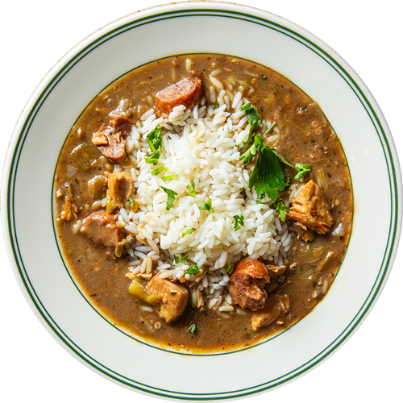

Gumbo

Description
Gumbo! To the Louisiana native, like this author, there are few words that can summon more passion or ire. Passion for a beloved native dish, and ire over disagreements about the best way to make it.
There's probably as many ways to make gumbo as there are people who eat it! It' best to think of the following recipe as a sort of 'mother' recipe - a template with which you can extend and expand your own gumbo horizons.
Ingredients
- the Holy Trinity - bell pepper, onion, and celery
-
- andouille sausage
- chicken thighs
- flour and oil for roux
- seasonings
Steps
- First, you make a roux
- Generally, I make an oil-less roux these days. I put a cup or two of flour in the oven at 350F, and bake it for about 3 hours. Stir every 30-45 minutes.
- Chop your trinity. I usually do a 2:2:1 ratio of bell pepper:onion:celery.
- Saute your trinity in butter, just enough to soften the veggies.
- Add your dry roux, mixing in well.
- Add chicken stock.
- Add salt and pepper to taste, plus a bay leaf, cayenne to taste.
- Add chicken meat and andouille.
- Bring to a boil, then simmer.
- Pour over rice. Eat!
back to Recipe list